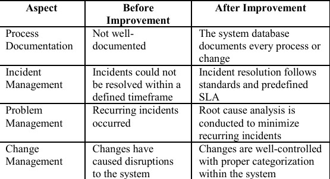
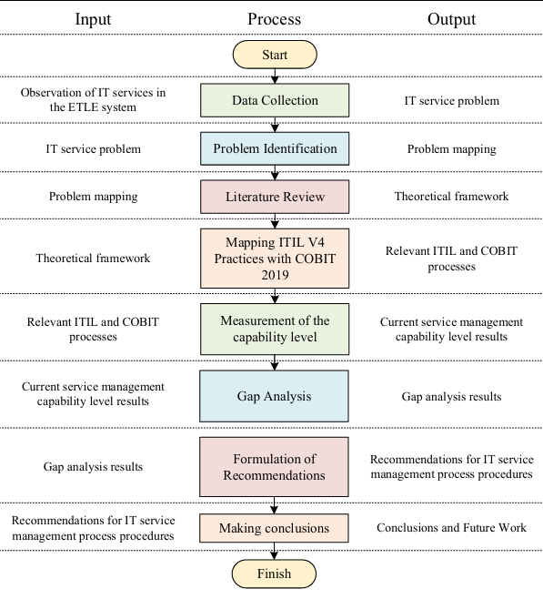

¿Qué documentos se deben tener en una organización?
De acuerdo con los marcos ITIL V4 y COBIT 2019, las organizaciones deben documentar procesos esenciales como:
- Gestión de cambios: RFC (Request for Change), revisión de riesgos e implementación.
- Gestión de incidentes: Priorización basada en impacto y urgencia.
- Uso de un Service Desk formal: Reemplazar métodos informales con un sistema de tickets.
- Gestión de problemas: Base de datos de errores conocidos para análisis y resolución.

Aspectos Clave del Marco COBIT
- Principios como la alineación estratégica y la gestión de recursos.
- Optimización en la gestión de riesgos mediante políticas claras.

Beneficios de ITIL V4
- Reducción de tiempos de inactividad.
- Gestión eficiente de servicios alineada con objetivos organizacionales.
Recomendaciones para el Desarrollo de TI
Se recomienda establecer acuerdos de nivel de servicio (SLA) que definan tiempos de respuesta basados en la prioridad de los incidentes y cambios.
- Documentación completa de procesos y cambios.
- Análisis de causa raíz para incidentes recurrentes.
- Menor dependencia de terceros gracias a una gestión interna fortalecida.